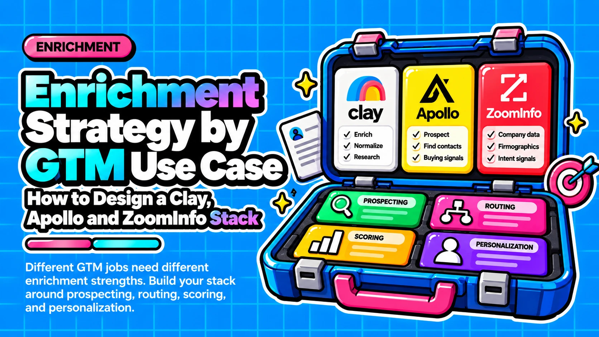

Enrichment Strategy by GTM Use Case: How to Design a Clay, Apollo and ZoomInfo Stack

Direct answer: Enrichment strategy should change by use case, because five variables shift: when enrichment fires, how fast it must finish, which field you need, how often you refresh and what unit you are billed in. Inbound needs fast, shallow company data; cold email needs verified email after an ICP filter; calling needs phone only at the call-ready stage; ABM enriches accounts before people; CRM hygiene runs on a schedule with skip rules; agent workflows need a budget cap before any call. Copying one recipe across all six causes bounced emails, burned phone credits, slow routing and repeat spend.
- Design per use case: Trigger, latency tolerance, key field, refresh cadence and cost-unit shape differ across motions, so one recipe fits none of them well.
- Clay orchestrates, others supply: Apollo and ZoomInfo act mainly as data sources with different billing models, so they do not substitute for Clay's orchestration role.
- Gate depth, not just volume: Identity at capture, email after ICP, phone at call-ready and AI research for priority accounts ties spend to intent (our recommendation).
- Cap agent-triggered spend: Agent and API calls draw on the same credit pools as manual use, so set a batch cap and a skip rule before any call.
- Verify prices in-product: Figures here are as of October 2026, and Apollo credit values conflict across sources.
Questions this article answers
- What does an enrichment strategy decide, and which variables change by use case?
- What role do Clay, Apollo and ZoomInfo play in an enrichment stack?
- Why does the same 1,000 records cost differently in each tool?
- When should enrichment run, and how often should data refresh?
- Which enrichment design does each GTM use case need?
- What breaks when one enrichment recipe is reused across use cases?
- What should you decide after assigning use cases to tiers?
- Plus 5 FAQs answered below
What does an enrichment strategy decide, and which variables change by use case?
An enrichment strategy decides six things: trigger, fields, provider order, validation, refresh and budget. Five variables change most by use case.
The five are trigger timing (capture, after an ICP filter, call-ready stage, signal or schedule), latency tolerance, the key field (company, email, phone or buying committee), refresh cadence, and cost-unit shape (per workflow step, per seat credit or per record per year). Practitioner sources agree on one principle: gate enrichment with ICP filters and triggers instead of enriching every record (RevPartners). Our view adds a second rule: each motion has one binding constraint, and that constraint should set the recipe.
- Inbound routing: latency
- Cold email: deliverability and volume
- Outbound calling: phone cost
- ABM: account structure
- CRM hygiene: cadence and re-enrichment cost
- Signal or agent workflows: uncapped call volume
What role do Clay, Apollo and ZoomInfo play in an enrichment stack?
Clay is the orchestration layer, while Apollo and ZoomInfo are mainly data sources with different billing models, so the three are not substitutes.
Clay waterfalls query providers sequentially, starting with the most cost-effective, and stop once a valid data point returns. The order can be changed and tested on 10 rows (Clay University). Apollo and ZoomInfo can sit inside or alongside that waterfall. The role assignments below are our interpretation of sourced billing mechanics, not benchmark results.
Where triggers, waterfall order and conditions are designed. Use it when different motions need different recipes over the same data sources. Clay bills per workflow step and per Data Credit consumed.
Per-seat credit billing with credits tightening for phone-heavy motions. Use it when email-first outbound is your main motion. API calls draw from the same pool as the UI.
Per-record billing on a rolling 12-month cycle. The Under Management rule makes repeat checks of already-enriched records credit-free for 12 months. Use it when you maintain a stable account list and re-check it often.
Why does the same 1,000 records cost differently in each tool?
Clay bills per workflow step, Apollo per seat credit, and ZoomInfo per new record per rolling 12 months, so cost per record depends on the recipe.
Clay has run on two meters since 11 March 2026: Data Credits for marketplace data (from $0.05 each) and Actions for platform steps (under $0.01 each), as of October 2026 (Supered). Per Clay's billing FAQ, each waterfall step that returns data consumes Data Credits and one Action, validation included, and a waterfall that returns nothing consumes nothing. Clay's help center reports that a fully filled contact typically uses 6 to 20 Data Credits, with emails cheap and phone numbers expensive (Reachly).
| Clay | Apollo | ZoomInfo | |
|---|---|---|---|
| What you pay for | Data Credits plus Actions per workflow step | Per-seat credits per action (email, phone, export) | One credit per record's first enrichment in 12 months |
| Entry price (Oct 2026) | Launch $185/month, 2,500 Data Credits | Basic $49 annual or $65 monthly per seat (reported) | Core contract unpublished; third-party estimates only |
| Phone vs email | Emails cheap, phone expensive; 6 to 20 credits per full contact | Reported 8 credits for phone vs 1 for email | Per-record credit; no separate phone rate in cited docs |
| What repeats cost | Every rerun step that returns data, validation included | API and bulk jobs share the UI pool | Re-enrichment free within 12 months, still counts toward record limit |
| What expires | Not covered in cited sources; check plan terms | Unused credits do not roll over | Credits expire each annual cycle |
Sources: Clay (Supered, Reachly), Apollo (Databar, Datalane), ZoomInfo (ZoomInfo Docs). Apollo credit values conflict across sources, so verify them in-product. Clay's validation charge applies whether the email passes or fails.
When should enrichment run, and how often should data refresh?
Enrich in four gated depth levels: identity at capture, email after an ICP pass, phone at the call-ready stage, and AI research for priority accounts only.
This ladder is our design recommendation, not a sourced fact. It rests on practitioner guidance to filter to ICP, deduplicate, trigger on meaningful events and skip rows already enriched (RevPartners). Each level pays only for rows that earned it.
Refresh by field decay, not one calendar. The most-cited benchmark is 22.5% a year, but it traces to a MarketingSherpa and HubSpot simulation and is one finding repeated, not independent confirmation (Firmable). ZoomInfo's own content cites 25–35% for job titles, about 20–25% for phone and about 3.6% a month for email. Schedule refreshes for slow-moving company data and trigger them on events for fast-moving fields such as title and email.
Which enrichment design does each GTM use case need?
Six use cases need six designs: inbound, cold email, calling, ABM, CRM hygiene, and signal or agent workflows.
Find your motion with the self-check in each tier, then read only that block. L1 to L4 are the depth levels above. Provider roles follow our interpretation of sourced billing mechanics. The tier definitions below are our design judgment, not measurements.
Applies if: form fills must be routed to a rep. Self-check: Is a rep waiting on this lead?
Trigger: lead capture. Depth: L1 (company and identity). Main cost driver: latency, because enrichment adds to speed to lead. First guardrail: no phone or AI steps in routing.
Applies if: you send sequences to net-new contacts. Self-check: Do bounces count against a domain you send from?
Trigger: ICP pass. Depth: L2 (email waterfall plus verification). Main cost driver: volume and validation steps, billed even when the email fails. First guardrail: verify before send; Google's 0.10% and 0.30% limits cover spam complaints, not bounces.
Applies if: reps dial prospects. Self-check: Does a rep phone this lead?
Trigger: call-ready stage. Depth: L3 (phone or mobile). Main cost driver: phone credits (Apollo phone reveals reportedly cost far more than email). Refresh cadence: on job change. First guardrail: no phone lookup before call-ready.
Applies if: you work a fixed account list. Self-check: Do you pick accounts before contacts?
Trigger: account added to the list. Depth: L1 on accounts, L2 on contacts, L4 for the top tier. Provider role: Clay finds people; ZoomInfo fits stable lists re-checked often. First guardrail: find people only inside qualified accounts.
Applies if: records already sit in HubSpot or Salesforce. Self-check: Are you updating records that already exist in your CRM?
Trigger: schedule. Depth: L1 and L2 (blank fields only). Provider role: Clay pulls records, fills gaps and writes back (auto-sync needs Growth or above). First guardrail: skip rows already enriched.
Applies if: a signal or AI agent starts enrichment without a person. Self-check: Can enrichment start without a human approving the batch?
Trigger: signal event or agent call. Depth: L4 (priority accounts only). Main cost driver: shared credit pools and no cost preview on ZoomInfo MCP. First guardrail: hard budget cap before any call.
When a team runs several motions, give each record one owning tier and run only that tier's recipe, so email-stage and phone-stage spend never leak across motions.
What breaks when one enrichment recipe is reused across use cases?
Reusing one recipe causes bounced emails, burned phone credits, slow inbound routing and repeated re-enrichment spend, and each failure has a specific guardrail.
Two misconceptions drive most reuse. First, waterfalls raise coverage, not accuracy; accuracy depends on validation, which Clay bills even when the email fails (Clay Support). Second, a recipe that suits one motion is wrong for another: inbound needs company data fast, while calling needs a cap on phone steps. One industry source puts verified cold B2B lists under a 2 to 3% bounce rate and unverified ones at 10 to 30%; treat that as a heuristic, not a Google figure (Mailbeast).
| Failure mode | Where it happens | Guardrail |
|---|---|---|
| Bounced emails | Cold email | Verify before send; enrich only after ICP pass |
| Burned phone credits | Calling; Apollo bulk jobs with mobile lookups | Phone only at call-ready; no mobile in bulk jobs |
| Slow inbound routing | Inbound | L1 only at capture; defer deeper steps |
| Repeat re-enrichment spend | CRM hygiene; existing CRM leads | Skip rows already enriched; filter blank fields |
| Uncapped agent spend | Signal and agent workflows | Batch cap, approval step, row-level skip rule |
Agents add a new risk. Apollo API calls draw from the same pool as the UI. ZoomInfo's MCP surface runs on bulk credits only and processes up to 25 records per call, and one secondary source quotes the docs as showing no cost preview before a tool call (Enrow). We recommend a batch cap, an approval step and a row-level skip rule before any agent runs.
What should you decide after assigning use cases to tiers?
Next, decide how much coverage to trade for accuracy per field, how to order and cap waterfall providers, and how to calculate cost per enriched record for each recipe.
We found no independent cross-vendor benchmark of coverage or accuracy. The coverage figures in agency and vendor guides come from commercially interested parties with no published methodology, so we do not use them. Test on your own rows. Track cost per enriched record per tier rather than cost per credit, because a credit buys different things in each meter.
Next-step checklist:
- ☐ Run a 10-row test of each recipe before scaling it (Clay University)
- ☐ Record cost per enriched record for each tier, not cost per credit
- ☐ Verify Apollo credit values and plan details in-product before budgeting (Databar)
- ☐ Recheck all vendor pricing before budgeting; figures in this article are as of October 2026
Frequently asked questions
Does adding more providers to a waterfall make enrichment more accurate?
Usually it raises coverage, not accuracy. A Clay waterfall queries providers in sequence and stops at the first valid result. Accuracy depends on validation, which Clay charges credits for whether the email passes or fails. We found no independent cross-vendor accuracy benchmark, so test 10 rows of your own data before scaling.
Is re-enrichment always free in ZoomInfo?
No. A record's first enrichment in a rolling 12 months costs one credit and places it Under Management for a year. Re-enrichment is free only for records already under management in that window, and each enrichment still counts against the record limit (ZoomInfo Docs).
Do Google's 0.10% and 0.30% thresholds limit email bounce rate?
No. They are spam-complaint thresholds for bulk senders: stay below 0.10% and avoid ever reaching 0.30% (Google). Gmail publishes no bounce-rate limit. A 2 to 3% bounce target for verified cold B2B lists is an industry heuristic, not a Google figure.
How fast does B2B contact data decay?
The most-cited benchmark is 22.5% per year, and it traces to one finding from MarketingSherpa and a HubSpot simulation (Firmable). ZoomInfo's own content cites 25–35% for job titles and about 3.6% a month for email. Use decay to set refresh cadence by field rather than treating any single number as precise.
Do speed-to-lead statistics justify skipping enrichment on inbound leads?
They are directionally supportive but reach us through secondary summaries, so they do not justify a precise rule. The firmer point is mechanical: enrichment time is part of lead processing time and adds to response time. Keep inbound enrichment shallow and company-level.
Sources
- Enrich People (Waterfalls), Clay University
- Understanding Clay's Waterfall Enrichment Credits Usage, Clay Community
- Clay Pricing 3.0 Explained for Sales Leaders (2026), Supered
- Clay Pricing in 2026, Reachly
- Apollo.io Pricing 2026: Plans, Credits and Real Costs, Databar
- Apollo API: what it does, pricing, and the architectural ceiling, Datalane
- Credit Usage and Limits, ZoomInfo Docs
- ZoomInfo Pricing: Which Numbers Are Real, Enrow
- What is B2B data decay? Rates, causes and fixes, Firmable
- Email sender guidelines, Gmail Help, Google
- What Is a Good Email Bounce Rate? Benchmarks by Provider, Mailbeast
- Speed to Lead: The B2B Guide to Faster Response, LeanData
- What is Clay Data Enrichment and How Should You Use it?, RevPartners
- Clay Data Enrichment Guide: Fields, Integrations & Waterfall Setup (2026), DevCommX
Want help applying these enrichment tiers to your own GTM stack?
Contact →